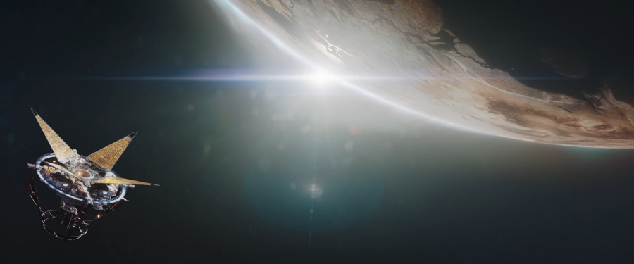
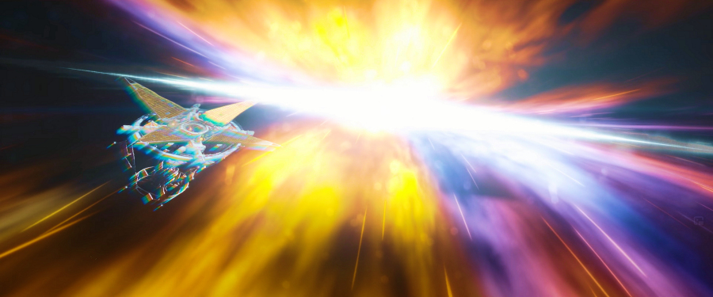

To the fans of role-playing video games, the name Bethesda Game Studios doesn’t need any introduction, having established itself as one of the industry’s top developers on the reputation of now-legendary The Elder Scrolls fantasy series as well as the critically acclaimed Fallout post-apocalyptic franchise, with The Elder Scrolls V: Skyrim and Fallout 4 being the most recent entries in those two franchises respectively. Most of the studio’s recent development effort was dedicated to various spin-offs of the two main product lines, such as the first-person view The Elder Scrolls: Blades and free-to-play Fallout Shelter for mobile platforms and Fallout 76 massively multiplayer online role-playing game.
We'd made a list of what we might want to do in the future and an epic sci-fi game has always been on my mind. Todd Howard, Starfield's director and executive producer
It was to a big surprise of the attendees then when, during the Bethesda’s E3 presentation on 10 June 2018, it was unexpectedly revealed that the company’s next project in development is the first new intellectual property in 25 years, Starfield. According to Todd Howard, Bethesda has been working on the concept of the game in some form or another for over ten years, although the pre-production of the game started only around 2013, which was around the time the company filed for the trademark of this new franchise, and the work on the title began in earnest in autumn 2015 - right after Fallout 4 came out - when the studio started creating dedicated Starfield team at its main office in Rockville, Maryland. It is expected that Starfield will be the game studio’s next major release, before The Elder Scrolls VI (which is in early stages of development at the moment of writing this article), and although Howard said that fans “should be very, very patient”, that was 2 1/2 years ago, and even back then he pointed out that “There are sections of it that are very playable.” so hopefully the release date should be edging a little bit closer now.
it’s different – but if you sit down and play it, you would recognise it as something we have made – if that makes any sense? explains Todd Howard
As far as the supported platforms are concerned, in addition to, thus far obligatory, PC version, the studio has stated that the sci-fi title will be released on the next generation platforms, both the PS5 and Xbox Series X. When, during the E3 2018, quizzed what the studio meant exactly by calling Starfield a “next generation game” – if it means that the product will feature a next generation video game engine or support the next generation gaming platforms, Howard further clarified that “it’s a bit of both”, also stating that development of versions for the older platforms, i.e. PS4 and Xbox One, is still under consideration with no final decision being made either way. However, it seems that the PlayStation versions of Starfield could be now at least questionable, as on 21st September 2020 Microsoft announced its acquisition of ZeniMax (Bethesda’s parent company) for US$7.5 billion, with the deal expected to be finalised by the second half of 2021, which could potentially mean Starfield becoming yet another prized title in Microsoft’s ever-expanding arsenal of Xbox exclusives similarly to Halo, Forza and Gears of War.
No set gameplay details have been revealed so far about Starfield, only that it will be, similarly to The Elder Scrolls and Fallout, also a single player RPG
No specific gameplay details have been revealed, except that the game will be, in line with other major Bethesda’s game franchises, a single player RPG and – as also unmistakably transpires from the, so far only, released short teaser – set in a science fiction setting. The very brief video, which you can play from the above link, doesn’t show an iota of the actual gameplay, as it is 100% pre-rendered cinematic cutscene. However, it gives at least some idea about the ambition of the developers and the scale of the game’s universe, in Howard’s own words: “Starfield is a game that we have spent years thinking about and working on, something we feel uniquely positioned to pull off and that we’re incredibly excited about. It is an all-new epic franchise – next-generation, single-player, science fiction role playing game.”. The minuscule teaser opens with sunlight slowly rising from behind an arid planet somewhere in deep space, before the camera pans down to reveal an orbiting satellite. But before one can even take a breath, a rift suddenly appears in space-time continuum and promptly swallows the hapless spacecraft. The End.
But there is more to this tiny video than meets the eye. If you pause the teaser at the 0:17 mark, and zoom-in on the bottom left-hand corner, you can just about make out an upside-down, round logo, followed by a partially visible word CONSTE [LLATION] reflected on the lens, suggesting that we actually observe the whole scene from the point of view of another spacecraft, via the lens of its camera. Considering that the teaser is a computer-generated animation and not some real-world footage – therefore there was obviously no actual camera with a real lens involved – and bearing in mind just how tight-lipped Bethesda is about the new title (Howard even admitted that until 2018’s E3, Starfield was only ever discussed on the company grounds under an internal code name), there could be only one possible conclusion any reasonable person can make: The inscription CONSTE [LLATION] is an Easter Egg planted here deliberately by the studio with the intension to create hype around the game and/or give the fans some cryptic clue about the game’s setting to ponder over. With a bit of googling, the only two viable space connections that I have managed to make, were with the Constellation Program – NASA’s cancelled crewed spaceflight programme (with the aim to return to the Moon and with a manned flight to Mars as the ultimate goal) and a technological term Satellite Constellation – which is a group of satellites working in unison. Considering that the former was shelved by the Obama administration way back in 2010 – eight years before game’s announcement, only the latter can possibly have some bearing on the game’s storyline, although what exactly that could mean is, at least to me, thus far unclear.
When further questioned whether Starfield will be a quintessential ‘Bethesda Game’ in the way Fallout and The Elder Scrolls game series are, Todd Howard said: “I don’t want to say yes or no to that because I don’t know what that means to you or whoever is going to read that.”, before continuing: “It’s different – but if you sit down and play it, you would recognise it as something we have made – if that makes sense? It has our DNA in it. It has things that we like.” And that could be only a good thing – I don't know how about you, but I, for one, cannot wait to lay my hands on what without a slightest shadow of doubt will be yet another exciting adventure from the masters of RPG.